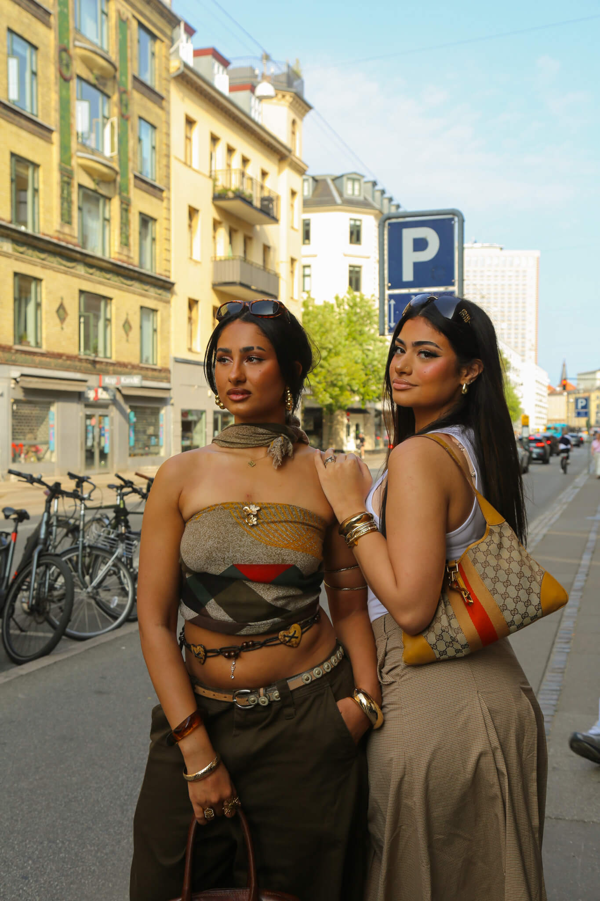
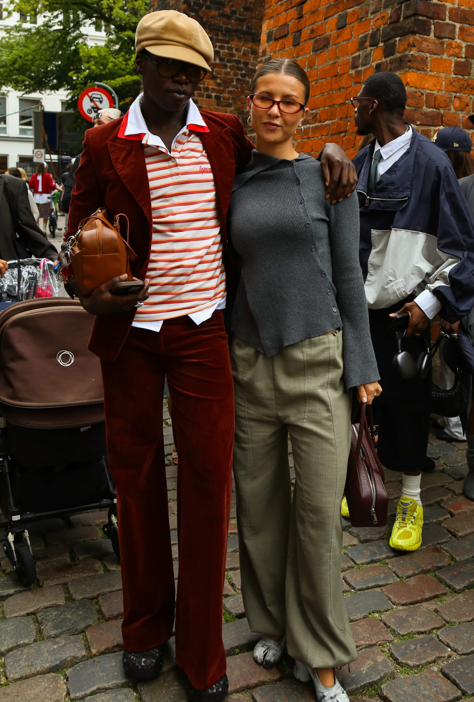
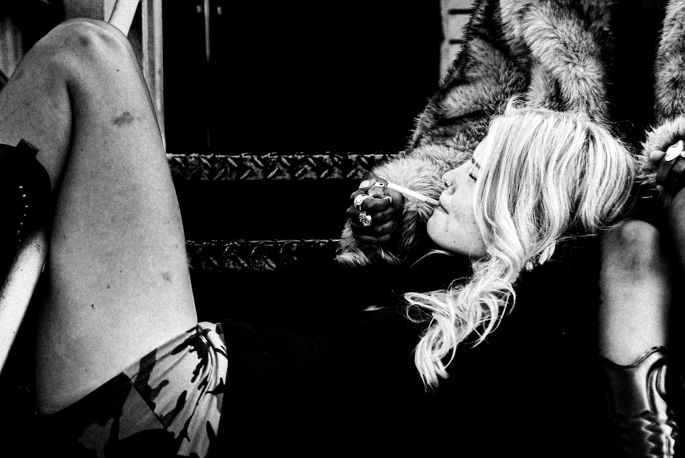

DENNE VINTER BLIVER PELS IKKE KUN EN TREND MEN ET STATEMENT.
Og ligesom med kærlighed i København, handler det hele om timing.


NÅR VIRKELIGHEDEN MØDER GLAMOUR
Der er noget fascinerende ved de øjeblikke, hvor natten langsomt slipper sit tag, og solen titter frem over gaderne. Glansen fra festen smelter sammen med byens rå kant, og pludselig handler mode ikke længere om trends - men om følelser, historier og det skæve, smukke i virkeligheden.
